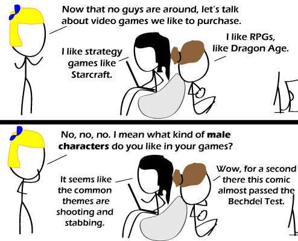

Comic JK 581
When I Feel Like It
⇤
<
?
>
⇥

⇤
<
?
>
⇥
Forum
.
RSS
.
Digg
.
Facebook
.
Reddit
.
Twitter
.
Stumbleupon
Enter your thoughts on number 581 here. Please, no spamming, trolling, phreaking, or females squawking. Why is Ms. Pacman eating his head? Since when is AC an RPG? Since when is Starcraft a strategy? Since when was it possible to sit like that in a beanbag chair? Since when is trolling allowed here? 1) I know right? Dang these newfangled 3D RPGs that are hardly RPGs /*besides, there's better games on the market than AC. Not as high graphically, but better still.*/ 2) RTS. Starcraft has always been considered a Real Time Strategy > RTS is strategy the same way pop music is music. >> Wait, there are non-rts strategy games?? I would love to learn of these >>> Risk! Stratego! >>>> Civilisation, Civilisation II, Civilisation III, Civilisation IV, Civilisation V >>>>> Pah civilisation is just a turn-based rts. >>>>>> EARTHBOUND! 3) It's clearly a rock. > No, it's not. But the answer is: Since they've lost enough weight. > (Yo mother's so fat she turns bean bag chairs inside out.) 4) Since when is trolling not allowed here? >>Ooh, ooh, I know this one! Since when do people spontaneously use "e.g." in oral conversation? Since last Tuesday. That's when. >Nah, since three years ago last Tuesday. >>It's true, I saw it happen. >>... I've used "e.g." in oral conversation all my life >>>You've used Eggs in oral all your life? >>>>Haha, you said "oral". >>>>>Haha, so did you. >>>>> Probably better than anal. Since when is not not trolling allowed here? >Enter your thoughts on number 581 here. Please, no spamming, trolling, phreaking, or females squawking. >no trolling Cyberpolice will hunt you down. BOOGERS